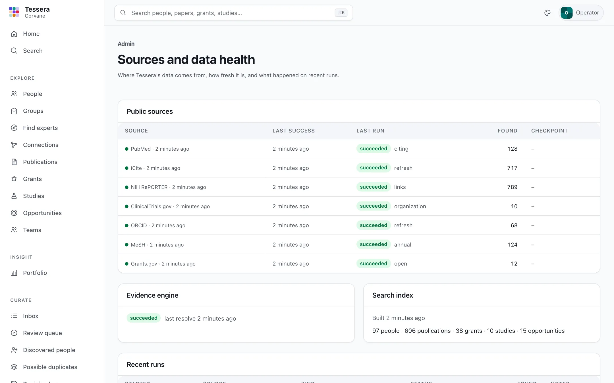
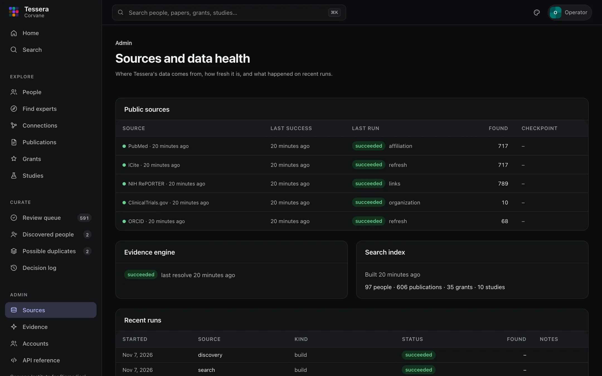

Running Tessera
Tessera is one Python application and one folder of data. This guide covers what is in that folder, how to keep data fresh, backups, upgrades, PostgreSQL, and what to check when something goes wrong.
The data home#
Everything Tessera stores lives in the data home ([data] home, ./var by default):
var/
raw/ the public sources' responses, exactly as received, one folder per run
lake/ normalized records in Parquet files, one folder per table
ledger.db people, links, decisions, and run history (SQLite; absent with PostgreSQL)
derived/ the search index and concept profiles, rebuilt from the lake and ledger
logs/ logs, one JSON object per lineThese parts are not equally precious:
- The ledger is the only part that holds human work: people, decisions, notes. Back it up.
- The lake and raw downloads come from public sources and can be fetched again. Keeping
raw/letstessera replayrebuild the lake without the network. derived/is always rebuildable withuv run tessera build searchanduv run tessera build discovery.
Only one data job (a sync, ingest, resolve, or build) runs at a time per data home; a second one stops at once and says another job is running. The web app keeps working during jobs.
Keeping data fresh#
Run uv run tessera sync on a schedule. After the first sync it fetches only what changed, so a daily run usually takes a few minutes. Each source's expected freshness appears on the Sources page, which warns when a source is overdue or its last run failed.
A daily cron entry (Linux or macOS):
30 2 * * * cd /srv/tessera && /usr/local/bin/uv run tessera --quiet syncA systemd timer works the same way: run uv run tessera --quiet sync from the folder that holds tessera.toml, as the user who owns the data home.
uv run tessera runs lists recent runs with their status and counts. A run that ends partial fetched some but not all of its batches; the next sync retries from the last complete checkpoint, so nothing is skipped.


Serving the app#
uv run tessera serveTessera listens on 127.0.0.1:8000 by default ([server] host and port).
Accounts and sign-in#
Out of the box Tessera runs in single-operator mode: no sign-in, answering only on this machine, with every decision recorded under [server] operator. That suits one curator on a laptop. For several people, or for a server others reach, turn on accounts:
- Create the first admin (you are asked for a password of at least 12 characters):
``bash
uv run tessera users add ada --name "Ada Okafor" --role admin
``
- Set
accounts = trueunder[server], andhostto the address to listen on (for example0.0.0.0). - Put Tessera behind HTTPS, typically a reverse proxy such as nginx or Caddy that forwards to it, so that passwords and session cookies travel encrypted. Have the proxy pass the original host (
Host, orX-Forwarded-Host) andX-Forwarded-Proto: https: Tessera refuses changes whose origin does not match the host, and marks its cookieSecureover HTTPS. With the proxy on the same machine, run Tessera on127.0.0.1and let the proxy face the network.tessera doctorreminds you when accounts are on and Tessera listens beyond this machine. - Restart
tessera serve. Everyone now signs in; admins add the others under Admin → Accounts, or from the command line.
Roles add up:
| Role | May |
|---|---|
| Viewer | Read everything: people, records, evidence, search |
| Researcher | Also review the suggestions about their own profile (the account is linked to their person) |
| Curator | Decide for everyone, or, when the role is limited to a unit or a person, only for them; curators for everyone also handle discovered people and duplicates |
| Admin | Everything, including accounts |
uv run tessera users add cora --name "Cora Lindqvist" --role "curator=unit:Department of Medicine"
uv run tessera users add ada.okafor --role researcher --person per_01…
uv run tessera users list
uv run tessera users reset-password cora # signs her out everywhere
uv run tessera users disable cora # also signs her out
uv run tessera users roles cora --role curator --role viewerSessions end after session_idle_hours without use (12 by default) and after session_max_days in any case (7). After five failed attempts for one username or address, sign-in is refused for 15 minutes. Tessera will not start with accounts on and no active admin, nor listen beyond this machine with accounts off. See ADR-0009 for the design.
Backups#
With SQLite, back up ledger.db with SQLite's own backup command, which is safe while Tessera runs:
sqlite3 var/ledger.db ".backup 'backups/ledger-$(date +%F).db'"Copying the whole data home while no job is running also works. With PostgreSQL, use pg_dump as for any database.
To restore, stop Tessera, put the ledger back, and run uv run tessera build search and uv run tessera build discovery to rebuild the index and discovery data from it.
Upgrading#
git pull
uv sync
uv run tessera db upgrade # apply ledger migrations, if any
uv run tessera build search # rebuild the index with the new version
uv run tessera build discovery # and concept profiles and the graphtessera doctor and the web app's health check (/api/v1/health) report a ledger that needs db upgrade. Migrations keep every row: they are tested on SQLite and PostgreSQL with a populated ledger, upgrading and downgrading. Back up the ledger before upgrading anyway. The changelog notes anything that needs more than these steps.
PostgreSQL#
SQLite suits one organization on one machine well. To keep the ledger in PostgreSQL instead:
uv sync --extra postgresThen set [ledger] url = "postgresql+psycopg://tessera@dbhost/tessera" (or TESSERA_LEDGER_URL) and run uv run tessera db upgrade to create the schema. Put the password in the standard PGPASSWORD variable or a .pgpass file rather than in the URL. The lake and search index stay in the data home either way.
Lake maintenance#
The lake keeps earlier versions of records when sources update them. Occasionally:
uv run tessera lake status # files and rows per table
uv run tessera lake compact # rewrite each table to current rows only
uv run tessera lake gc # delete superseded files older than 7 daysWhen something goes wrong#
tessera doctorchecks the configuration, the data home, the ledger schema, and the database engines Tessera relies on (SQLite full-text search and DuckDB);tessera doctor --onlinealso checks that each public source can be reached.tessera runsand the Sources page show failed or partial runs with the source's error.- Logs are in
<data home>/logs. Add-vto any command for more detail. - A source changed or was down: run
uv run tessera syncagain; completed work is not repeated. - Search looks out of date:
uv run tessera build searchrebuilds it from the lake and ledger in seconds.